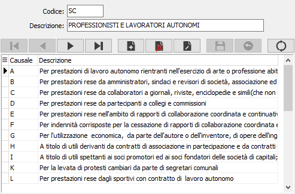

Causali pagamento 770
La tabella contiene le causali di pagamento che servono per la compilazione del modello 770. Poiché uno stesso codice tributo (ad esempio il 1040) si applica a diverse tipologie di professionisti e lavoratori autonomi, l’ulteriore specificazione della causale consente di precisare il titolo della ritenuta e determina il congruo raggruppamento delle singole ritenute di un percipiente. Sostanzialmente la tabella si giustifica per consentire all’utente di individuare la corretta causale di pagamento.

CODICE: identifica il quadro del mod. 770 a cui si riferiscono i dati successivi. Valori ammessi:
SC = Quadro SC
SE = Quadro SE
CODICE CAUSALE PAGAMENTO: codice alfanumerico di 1 carattere, corrispondente alla codifica ministeriale, che definisce la causale di pagamento in esame e costituisce il secondo elemento della chiave. Sul campo sono attive le funzioni di ricerca (F9) sulla tabella stessa, relativamente al quadro indicato.
DESCRIZIONE: campo alfanumerico per descrivere la denominazione del contributo.
CAUSALI MINISTERIALI PAGAMENTO PER QUADRO SC
A - per prestazioni di lavoro autonomo rientranti nell'esercizio di arte o professione abituale;
B - per prestazioni rese da amministratori, sindaci e revisori di società, associazione ed altri enti con o senza personalità giuridica;
C - per prestazioni rese da collaboratori a giornali, riviste, enciclopedie e simili (che non costituiscono diritti d'autore);
D - per prestazioni rese da partecipanti a collegi e commissioni;
E - per prestazioni rese nell'ambito di rapporti di collaborazione coordinata e continuativa diversi da quelli sopra elencati;
F - per indennità corrisposte per la cessazione di rapporti di collaborazione coordinata e continuativa assoggettabili a tassazione separata;
G - per l'utilizzazione economica, da parte dell'autore o dell'inventore, di opere dell'ingegno, di brevetti industriali e di processi, formule o informazioni relativi ad esperienze acquisite in campo industriale, commerciale o scientifico;
H - a titolo di utili derivanti da contratti di associazione in partecipazione e da contratti di cointeressenza , quando l'apporto e' costituito esclusivamente dalla presenza di lavoro;
I - a titolo di utili spettanti ai soci promotori ed ai soci fondatori delle società di capitali;
K - per la levata di protesti cambiari da parte di segretari comunali;
L - per prestazioni rese dagli sportivi con contratto di lavoro autonomo;
M - a titolo di indennità corrisposte per la cessazione di attività sportiva professionale;
N - a titolo di indennità corrisposte per la cessazione dei rapporti di agenzia delle persone fisiche;
P - a titolo di indennità corrisposte per la cessazione da funzioni notarili;
Q - per l'utilizzazione economica, da parte di soggetto diverso dall'autore o dall'inventore, di opere dell'ingegno, brevetti industriali e di processi, formule e informazioni relativi ad esperienze acquisite in campo industriale, commerciale o scientifico;
R - per prestazioni di lavoro autonomo non esercitate abitualmente;
S - a titolo di indennità di trasferta o di rimborso forfetario di spese spettanti a soggetti che svolgono attività sportiva dilettantistica di cui alla L. n. 80 del 1986;
T - per altro titolo diverso dai precedenti.
CAUSALI MINISTERIALI PAGAMENTO PER QUADRO SE
A - agente o rappresentante di commercio monomandatario;
B - agente o rappresentante plurimandatario;
C - commissionario;
D - mediatore;
E - procacciatore d'affari;
F - incaricati per le vendite a domicilio;
G - incaricati per la vendita porta a porta e per la vendita ambulante di giornali quotidiani e periodici (L. 25 febbraio 1987, n. 67);
T - altro titolo diverso dai precedenti.